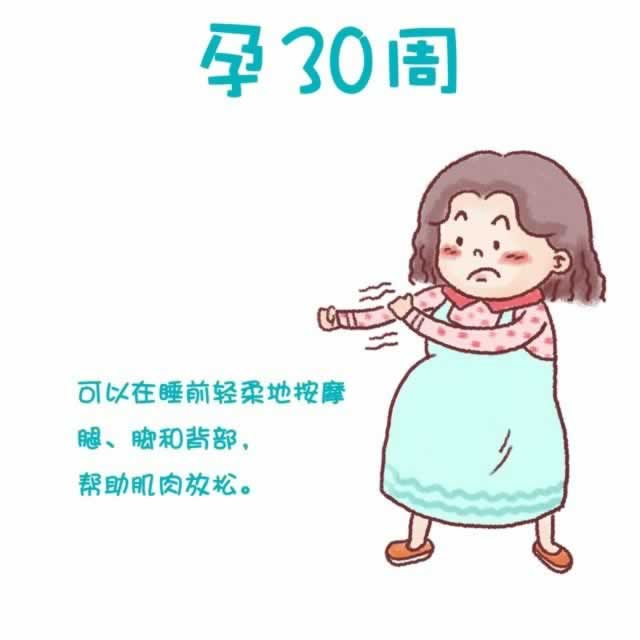

随着宝宝的成长，你的体重还在持续增加。你的腹部已经太大，使得你无法舒服地躺下，因此直接影响到你的睡眠。睡前让老公帮忙按摩一下腿脚和背部，会让肌肉放松，提高睡眠质量。
因为此时子宫已升到横膈膜处，所以你经常感到呼吸不畅，喘不过气来。而且吃东西后会出现胃部不适，感觉堵得慌。再坚持几周，等宝宝的头部开始下降，进入骨盆后，这种情况将得以缓解。
随着预产期的临近，你发现自己变得健忘，经常丢三落四。虽然这给你的生活带来了一些困扰，但并无大碍。的确，即将做妈妈了，要考虑的事、要做的事太多。为了应对健忘，你可以随身携带记录本，在日历上标注要做的事，记得将钥匙等常用物品放在固定位置。